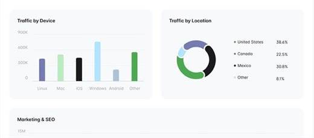
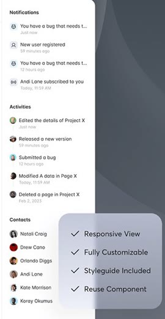
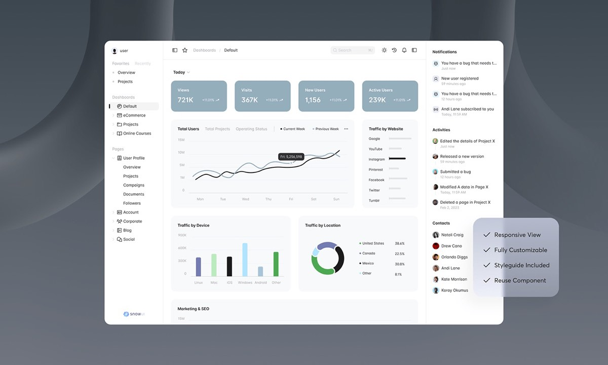
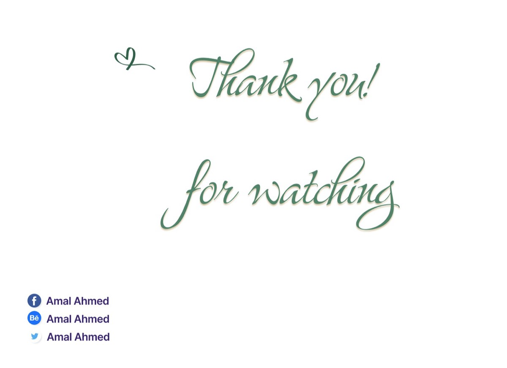

08
الشاشات النهائية



لوحة تحليلات: المشاهدات والزيارات والمستخدمون الجدد وحالة التشغيل وحركة الزيارات حسب الجهاز والموقع.

واجهة لوحة تحليلات للفرق التي تحتاج رؤية أداء منتجها بنظرة واحدة: المشاهدات والزيارات والمستخدمون الجدد والنشطون، إضافة إلى مصادر الزيارات والأجهزة والمواقع.
يعتمد التصميم على ثلاثة أعمدة — التنقل، التحليلات الرئيسية، ولوحة النشاط المباشر — بألوان هادئة لتبقى البيانات في المقدمة.
المشاهدات والزيارات والمستخدمون الجدد والنشطون مع اتجاه النمو.
الأسبوع الحالي مقابل السابق في رسم واحد.
حسب الموقع والجهاز والمكان.
الإشعارات ونشاط الفريق وجهات الاتصال.


3 لوحة · البحث ورحلات المستخدم ونظام التصميم وكل الشاشات
